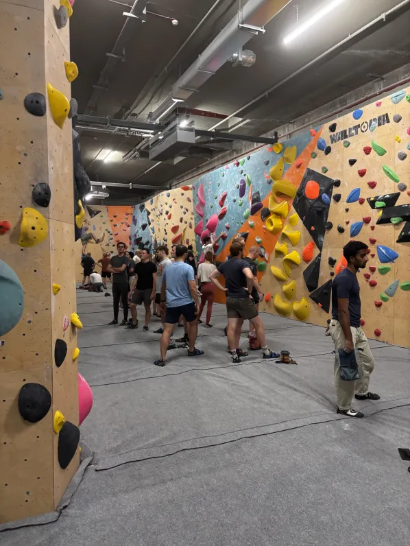

More climbing talk! I originally started climbing with a friend that invited me to a free event that my dorm was doing at Rock Spot in South Boston. We were both pretty interested in climbing after we got the feel for it, and would go once a week to get started since our hands weren't used to the abuse yet. I slowly picked up the hobby more and more, and I truly started climbing consistently around junior year in 2023/2024 after I recovered from a sprained ankle. I've been climbing consistently since then at Central Rock Gym in Lansdowne, Harvard, and my home gym in Warwick, Rhode Island. Being at Central Rock Gym is extremely convenient for me since I can still use my membership when I'm at home or in Boston. I have a dedicated group both in Boston and at home, and have gotten to go to Seattle, Spain, and Canada to climb. I want to keep pushing myself to keep climbing harder, not just as a personal goal, but to keep up with my friends that are all so motivated to keep pushing forward.
My Email: farnesi.k@northeastern.edu
Find Me On Instagram!